TBridge用户手册
新浪微博 | 哔哩哔哩 | 网易云音乐 @番茄西西西红柿 番茄音乐交流群 773596077
重要：TBridge是基于NetVST的功能扩展，建议首先了解NetVST。http://netvst.org/
目录
一、界面介绍 1.1 启动界面 1.2 程序界面
二、使用教程 2.1 打开插件 2.2 功能介绍 2.3 与DAW进行连接 2.4 注意事项
一、界面介绍
1.1 启动logo
每次启动TBridge时，会出现启动logo，如下方左侧截图所示。该启动logo的持续时间取决于你向TBridge插件浏览器中所添加的VST插件的数量，数量越多，则用于将插件的相关信息载入TBridge的时间越久，因此logo的显示时间也越久。首次启动TBridge时，由于用户尚未添加插件，所以启动logo会一闪而过。
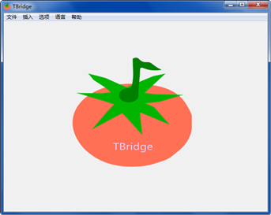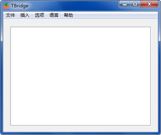
1.2 程序界面
程序启动完成后，界面如上方右侧截图，白色区域为插件显示区，上方菜单栏分别是文件、插入、选项、语言、帮助。
二、使用教程
2.1 打开插件
打开插件的方式有两种，有种是通过菜单栏中的文件-打开插件，找到想要打开的插件，另外一种是通过菜单栏中的插入-插件浏览器，通过插件浏览器打开。
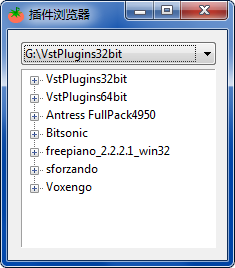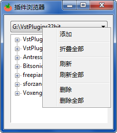
插件浏览器如上图所示，浏览器窗口内的上方为下拉框，用来进行路径操作，下方为树形列表框，用来显示插件信息。初次打开时，内容为空。需要先在下拉框右键，弹出详细的操作菜单，添加自己已定义的插件目录。刷新是对下拉框的显示的目录进行刷新，一般在新添加插件后使用。
目录添加完成后，有两种方式通过插件浏览器为TBridge插入新插件，分别是双击，右键单击，双击的作用是，将选中的插件载入TBridge，同时关闭插件浏览器；右键单击的作用是，将选中的插件载入TBridge，但不关闭插件浏览器，此操作主要是为了批量添加插件，TBridge最多允许同时添加16个插件，该数量上限是由于NetVST本身只提供了16个网络接口，每个插件需要占用一个网络接口。
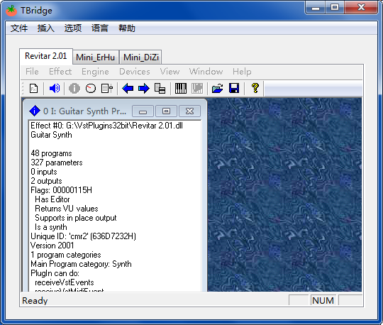
2.2 功能介绍
插件添加完成后，如图所示，NetVST将会以子窗体的形式嵌入到TBridge中。用户可以通过标签栏来快速的查看插件信息。
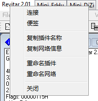
当你右键点击相对应的标签页，会弹出上图所示的菜单项，对应的功能如图。
连接：与DAW中的接收器连接（或按下标签页拖动到接收器进行连接） 便签：将在随后介绍
复制插件名称、复制网络信息：因为TBridge（NetVST）的使用必须在DAW中搭配相对应的接收器，但接收器的名称无法更改，我们需要自己在DAW中通过重命名轨道或者添加便签的方式，来记录该接收器对应的插件名称和网络信息，以防混淆，该功能主要是为了方便快速的复制插件名称和信息，然后粘贴到DAW的便签中。
重命名插件、重命名网络：如果需要同时打开多次相同的插件，使用它不同的预设，则可以通过重命名的方式区分。
便签的使用：
你可以在便签里输入一些需要临时记录的文字，比如该插件的使用时机，你想用它做什么，以及在插件给出的多种预设中，你选择了哪个预设。
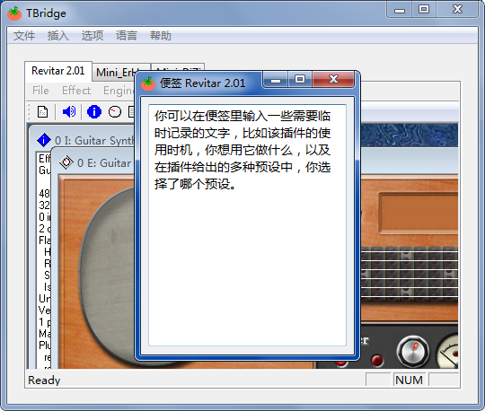
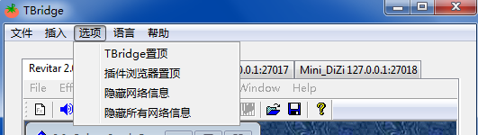
隐藏网络信息，顾名思义，用来选择是否一直在标签栏展示插件的IP地址。
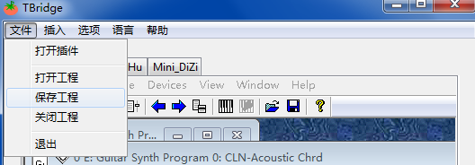
打开和保存工程，用户可以将当前打开的插件信息（如便签内容、插件名称、网络信息）保存成工程文件，用于下一次通过打开工程选项，批量的载入已经打开过的工程文件。
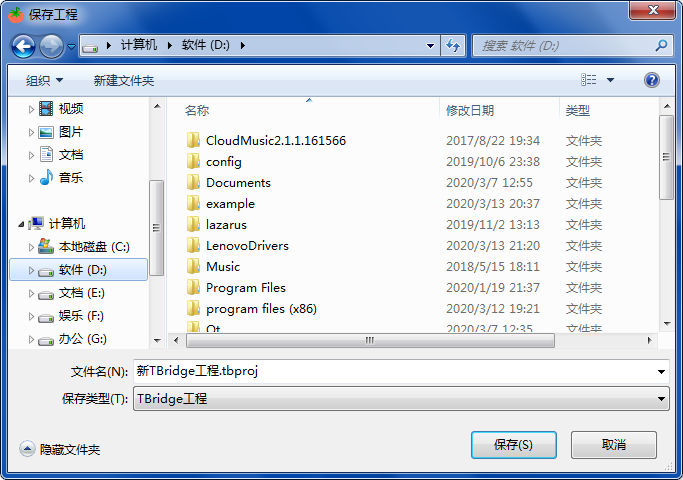
2.3 与DAW进行连接
1、插件载入完成后，点开devices-Network，直接在弹出的窗口中点击ok即可，这一部分实际上是属于NetVST的操作，但TBridge提供了自动分配网络接口的功能，使得用户只需要点击OK，而无需手动分配IP地址。
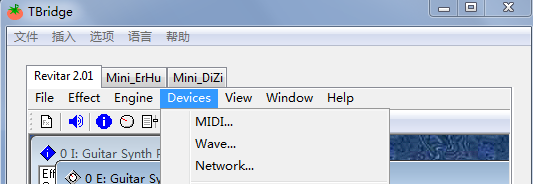

2、在DAW中，插入NetVST提供的插件，有两种类型，分别是NetFilter.dll和NetSynth.dll，第一个用来传递效果器信息，第二个用来传递乐器信息，这个用户根据自己的需求即可。在音轨中将插件载入，同时打开插件。如下图。

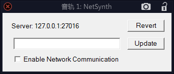
如图所示，出现该界面后，先不要进行操作，而是打开TBridge，右键点击需要链接的插件，点击连接，会自动填充网络信息并启动连接。或者你可以鼠标左键按下想要使用的插件不放松，拖动鼠标到上方截图的窗口，信息也可以自动填充并启动连接，这时你就可以在DAW听到所使用插件的效果了。
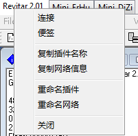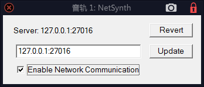
同时，为了方便在DAW中辨别插件，你还可以复制插件名称，然后重命名你的DAW轨道名称，或者通过DAW中的便签插件进行记录。
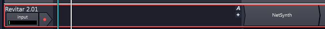
注意：通过打开工程选项载入的插件，仍然需要进行网络连接，在tracktion中（未测试其他宿主），NetSynth和NetFilter会记住他们上一次的网络连接，虽然由于NetVST的bug，他们在每一次打开时，Server总会显示127.0.0.1:27016，但是你点击Enable Network Communication，Server会自动显示成它记住的IP信息。
2.4 注意事项
1、如果已经将TBridge（NetVST）与DAW进行了连接，那么当你关闭TBridge或者DAW之前，请确保断开连接，也就是取消勾选每一个插件的Enable Network Communication。如果不取消勾选，极易引发宿主崩溃。请注意，有个已知的NetVST本身的bug，当你勾选Enable Network Communication后，每次重新打开NetSynth或者NetFilter窗口的时候，这个选项都处于未勾选的状态，但它确实已连接，因此，如果要断开连接，需要再次勾选Enable Network Communication，然后取消勾选。
2、如果遇到了使用TBridge过程中，DAW崩溃，或者TBridge无响应或崩溃的情况，一般都是由于NetVST的连接状态出错引起的，这种情况下，在进程列表中，可能会残留着NetVSTHost.exe程序，它们仍然会占据着相对应的接口。请通过任务管理器中的进程管理将这些NetVSTHost.exe全部结束，否则将无法正常使用TBridge。
3、请不要尝试使多个NetSynth或者NetFilter连接相同的网络接口，会造成DAW无响应甚至崩溃。